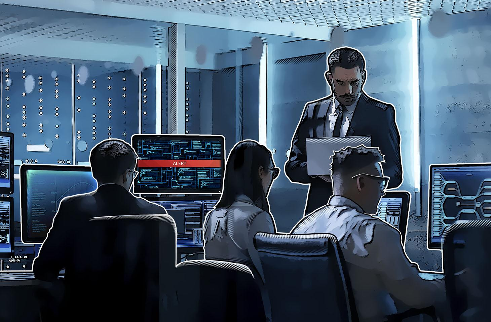

Este es nuestro Proyecto 2: Seguridad en el Trabajo
En este trabajo se analizan de forma colaborativa los riesgos laborales asociados al entorno informático,
abarcando desde la ergonomía física hasta la seguridad de la infraestructura técnica.
El objetivo es identificar peligros potenciales y proponer medidas preventivas eficaces que garanticen
el bienestar del profesional y la integridad de los sistemas digitales, cumpliendo con los estándares
actuales de seguridad y salud en el trabajo.
